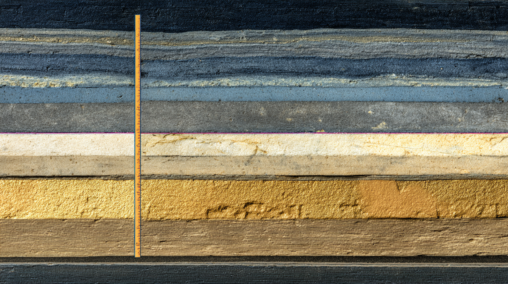
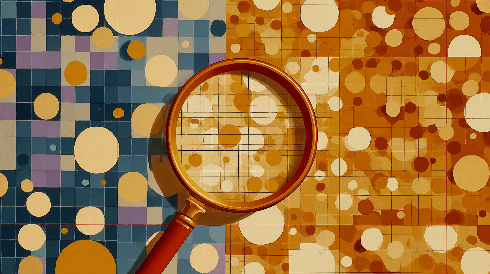

Introduction to Generative AI for Education
A large open circle bisected by a 12-column Swiss grid, centered on a Prussian blue #1A2744 field. Circle arc in vermillion #C8361F, interior cream #F0EAD6. Fine ochre gold #D4B84A grid lines radiate from center outward to the frame edges, suggesting welcome and expansion. References Müller-Brockmann concert poster geometry — mathematical precision married to invitation. Flat vector, no gradient, no shadow. The circle opens at the right edge, implying beginning. Swiss poster, 16:9.

Learning Objectives
A hexagon subdivided into six equal triangular wedges radiating from center, alternating Prussian blue #1A2744 and cream #F0EAD6, outlined in vermillion #C8361F. Sits on a strict modular grid on a cream ground. Six small ochre gold #D4B84A circles mark outer vertices. The form suggests a wheel of inquiry — six lenses of learning. Graphite #2D2D2D rules extend beyond the hexagon's edges. Generous negative space surrounds the form. Swiss poster, Armin Hofmann rigor, flat, 16:9.

Contact Details
A single vertical ochre gold #D4B84A line bisects the left third of the frame against a Prussian blue #1A2744 ground. From this line, three fine horizontal graphite #2D2D2D rules extend rightward like a notation staff. At the top intersection: a circle in vermillion #C8361F, suggesting a person or node. Cream #F0EAD6 negative space fills the right two-thirds. Direct, singular, precise — one instructor, one channel. Swiss poster, Hofmann reduction, flat vector, 16:9.

Course Information
Three equal horizontal bands stack across the full 16:9 frame: Prussian blue #1A2744 top (theory), cream #F0EAD6 middle (discussion), vermillion #C8361F bottom (practice). Each band contains a centered geometric marker — a circle, a cluster of three small circles, a single point. Fine graphite #2D2D2D rules separate bands. Ochre gold #D4B84A accent circles echo the modular grid. Equal weight, equal time — a score abstracted to three-part structure. Müller-Brockmann, flat, 16:9.

Structure
Six vertical rectangular columns of equal width on a cream #F0EAD6 ground, alternating Prussian blue #1A2744 and graphite #2D2D2D, heights varying slightly to suggest progression. Fine vermillion #C8361F horizontal rules cut across all columns at a shared height — a common learning horizon. Ochre gold #D4B84A circles cap each column. The composition is a bar chart dematerialized into pure Swiss structural form. Flat vector, screen print, Müller-Brockmann, 16:9.

Assessment
Two rectangles dominate a cream #F0EAD6 ground: a smaller vermillion #C8361F rectangle (30% width) and a larger Prussian blue #1A2744 rectangle (70% width), separated by a fine graphite #2D2D2D rule. Proportions are mathematically exact at 30:70 ratio rendered as visible geometry. Ochre gold #D4B84A circles mark key intersections at the dividing line. Fine grid lines underlay without competing. Formative accumulation versus summative culmination as geometric weight. Swiss poster, Hofmann asymmetric balance, flat, 16:9.

Formative Assessment Building: Weekly Tasks
Six small squares in a horizontal row on a graphite #2D2D2D ground, progressively filling with Prussian blue #1A2744 left to right — leftmost empty, rightmost solid. Above a fine ochre gold #D4B84A baseline. Vermillion #C8361F tick marks punctuate each square's top edge. Cream #F0EAD6 negative space above the row is substantial, emphasizing deliberate accumulation. The sequence reads as a visual score of weekly building. Swiss poster, flat, precise, 16:9.

Summative Term Assessment: An Intervention
A single bold vermillion #C8361F triangle at the composition's left third — stable, grounded. From its apex, a constellation of smaller geometric forms (circle, rectangle, hexagon, arc) radiates rightward across a Prussian blue #1A2744 ground, each in cream #F0EAD6 or ochre gold #D4B84A. Fine graphite #2D2D2D lines connect the forms like an explosion diagram. Creative divergence from a structured point of departure. Screen print flat color, Müller-Brockmann spatial logic, 16:9.

Assessment Criteria
A precise measurement grid: fine horizontal rules at equal intervals across a cream #F0EAD6 ground. Small vermillion #C8361F circles on the left margin mark each criterion row. Three thicker graphite #2D2D2D vertical rules divide the composition into formative and summative column zones. Ochre gold #D4B84A diagonal accent lines cross the upper-right quadrant. A Prussian blue #1A2744 band fills the left column header. A calibration chart stripped to essential geometry. Swiss poster, clinical, flat, 16:9.

Process of Submission: Why a Single Google Doc?
Three overlapping rectangles in Prussian blue #1A2744, graphite #2D2D2D, and cream #F0EAD6 arranged in a shallow diagonal stack — each slightly offset, suggesting document accumulation or version history. Ochre gold #D4B84A corner registration marks appear on each rectangle. A single vermillion #C8361F circle on the topmost rectangle serves as focal point. Stacked paper rendered as pure geometry — the weekly document as architectural accumulation. Flat vector, screen print, 16:9.

A Note on AI Use for This Course
A circle divided along a vertical axis: left half Prussian blue #1A2744 with fine graphite #2D2D2D circuit-pattern right-angle lines; right half cream #F0EAD6 with the same lines rendered in slight curves — organic yet mathematical. A vermillion #C8361F arc bridges the division at the top. Ochre gold #D4B84A nodes at key intersections on both sides. Algorithmic and human thought: distinct but connected, governed by the same underlying grid. Swiss poster, Hofmann, flat, 16:9.

A Note on Accessibility
Four concentric rings expanding from a central ochre gold #D4B84A point on a Prussian blue #1A2744 ground. Each ring is cream #F0EAD6, separated by fine graphite #2D2D2D gaps. A small vermillion #C8361F arc breaks one ring on the right side — an opening, an access point. The mathematical regularity implies systematic inclusivity. The universal access symbol abstracted to pure concentric geometry. Flat vector, Müller-Brockmann radial composition, screen print, 16:9.

Discussion Groups
Three vermillion #C8361F circles of equal size in a loose triangular formation on a cream #F0EAD6 ground, edges nearly touching. Fine Prussian blue #1A2744 arrows curve around each circle's circumference, suggesting rotation and movement. A graphite #2D2D2D grid underlies the composition. Small ochre gold #D4B84A dots mark the spaces between circles. Three equal voices in structured rotation — group exchange as geometric choreography. Swiss poster, dynamic balance, flat vector, screen print, 16:9.

Discussion and Introductions
Six fine graphite #2D2D2D arcs emanate from a central Prussian blue #1A2744 circle, curving outward to six small cream #F0EAD6 rectangles positioned at the frame perimeter. The arcs suggest speech or connection without literal speech bubbles. The central circle contains a small vermillion #C8361F dot. Ochre gold #D4B84A bands the upper and lower thirds. Six questions radiating from a single inquiry center — structured dialogue as Swiss radial geometry. Flat vector, screen print, 16:9.

Break
A single ochre gold #D4B84A horizontal rule bisects the exact vertical center of a Prussian blue #1A2744 16:9 frame. Above the rule: empty space. Below the rule: empty space. One small cream #F0EAD6 circle sits precisely centered on the rule. A fine vermillion #C8361F tick marks the rule's midpoint. Nothing else. Mies van der Rohe distilled to image — the pause between things. Flat, silent, geometrically exact. Swiss poster, minimal, 16:9.

AI Consolidation
Three large circles in a triangular cluster on a cream #F0EAD6 ground: two Prussian blue #1A2744 and one vermillion #C8361F, nearly touching at center. Around this cluster, five smaller graphite #2D2D2D circles orbit in an outer ring. Fine ochre gold #D4B84A rules form a strict underlying grid. Three dominant, five receding — corporate consolidation as geometric mass. The large circles press against each other: dominance, proximity, competition. Swiss poster, Müller-Brockmann, flat vector, 16:9.

Rise of Open Source Models
A large Prussian blue #1A2744 circle on the left third of the frame — a single dominant form. To its right: twenty-three small circles of varying sizes scatter across a cream #F0EAD6 grid, in vermillion #C8361F and graphite #2D2D2D. Fine graphite lines connect clusters of small circles to each other but not to the large one. Ochre gold #D4B84A dots mark key intersection nodes. Decentralized challenge to centralized power. Swiss poster, flat, screen print, 16:9.

Contradictory Tendencies: Increasing Demand
Three ascending vertical forms — thin rectangles capped with circles in Prussian blue #1A2744, graphite #2D2D2D, and vermillion #C8361F — grow progressively taller left to right against a cream #F0EAD6 ground. Fine ochre gold #D4B84A horizontal rules mark scale intervals. Each circle cap grows proportionally. The rightmost form nearly exceeds the frame — uncontained expansion implied. Scaling laws made visible as pure geometric progression. Swiss poster, flat vector, Müller-Brockmann, 16:9.

...but also: Efficiency
Three geometric forms converge from frame edges toward a central small cream #F0EAD6 circle on a Prussian blue #1A2744 ground — visual inverse of Slide 18's expansion. The forms taper and compress as they approach center. Ochre gold #D4B84A compression lines radiate inward. Vermillion #C8361F marks the central convergence point. Fine graphite #2D2D2D grid underlies the composition. More from less — better algorithms, smaller footprints. Swiss poster, Hofmann, flat vector, 16:9.

Agentive AI
A geometric arm — three connected Prussian blue #1A2744 rectangles forming an elbow joint with vermillion #C8361F joint circles — extends from the left frame edge toward a grid of small objects on a cream #F0EAD6 ground at right: an ochre gold #D4B84A circle, a graphite #2D2D2D square, a vermillion triangle. Fine graphite grid lines structure the operational space. Tool use, automation, agency abstracted to Swiss industrial diagram. Flat vector, screen print, 16:9.

Education Issues: Cons
A once-orderly Prussian blue #1A2744 grid on cream #F0EAD6 — now fractured: lines displaced, a circle broken into arcs, vertical rules interrupted. The disruption emanates from a small vermillion #C8361F point in the upper-left quadrant, like a crack propagating through glass. Graphite #2D2D2D fragments scatter. Ochre gold #D4B84A remnants of the original perfect grid persist at the right edge. Structural damage to Swiss order — bias and inequality made visible. Flat, screen print, 16:9.

Education Issues: Pros
A Prussian blue #1A2744 grid on cream #F0EAD6 from which circular forms expand outward at key nodes — as if the grid itself is blooming. Ochre gold #D4B84A circles seed each expansion point. Vermillion #C8361F arcs connect adjacent blooms. Graphite #2D2D2D baseline rules remain intact beneath the growth. Personalization, accessibility, inclusion emerging from systematic design — productive tension between structure and flourishing. Deliberate counterpoint to Slide 21. Swiss poster, flat, Hofmann, 16:9.

However: Bigger Picture Issues
A wide Prussian blue #1A2744 geometric mass — a thick horizontal rectangle — occupies the lower two-thirds of the frame, pressing down on a cream #F0EAD6 sky. Three thin vermillion #C8361F vertical lines reach upward from the mass but cannot escape the frame. A large ochre gold #D4B84A circle is partially obscured behind the mass at center. Fine graphite #2D2D2D rules cross the upper zone. Power concentration as geometric weight — scale and pressure made visible. Swiss poster, flat, 16:9.

What Do We Need to Learn Now? What Do We Need to Teach?
A Y-shaped form in bold graphite #2D2D2D lines divides the composition: upper-left branch Prussian blue #1A2744 (specialized technical), upper-right branch vermillion #C8361F (humanistic), stem downward cream #F0EAD6 (common ground). At the fork: a small ochre gold #D4B84A circle — the moment of decision. Fine Swiss grid underlies the composition. The educational crossroads abstracted to essential topology — no figures, pure geometry. Swiss poster, flat vector, Müller-Brockmann, 16:9.

Crisis in Higher Education
Four vertical Prussian blue #1A2744 pillar-forms stand across the frame's lower half on a cream #F0EAD6 ground — each leaning slightly off true vertical by a varying degree. Fine vermillion #C8361F diagonal stress lines cross each pillar. A single ochre gold #D4B84A horizontal rule at mid-frame marks the structural datum they deviate from. Graphite #2D2D2D baseline anchors the composition. Institutional drift — not collapse, but visible deviation from designed order. Swiss poster, flat, 16:9.

Case Study: Geist in the Machine
Two identical geometric profiles face each other across the exact vertical center of the frame — mirrored forms, one solid Prussian blue #1A2744, one rendered in fine graphite #2D2D2D lines on cream #F0EAD6 as if one is the solid and one is the ghost-reflection. Between them: a thin ochre gold #D4B84A vertical line of separation. Small vermillion #C8361F circles mark equivalent points on each form. Hegelian recognition — self-consciousness requiring encounter with an other. Swiss poster, flat, 16:9.

Case Study: Key Concepts
Three horizontal planes stack across the frame: cream #F0EAD6 top (consciousness), Prussian blue #1A2744 middle (preconscious), graphite #2D2D2D bottom (unconscious). Each plane contains its own grid — increasingly fine toward the bottom, approaching the imperceptible. A vermillion #C8361F vertical line descends through all three planes, connecting layers. Ochre gold #D4B84A circles of decreasing size mark each plane's grid intersections. Psychoanalytic and cognitive topographies as Swiss stratigraphy. Flat vector, screen print, 16:9.

What AI Can Do for Research
A cream #F0EAD6 circle at center surrounded by concentric graphite #2D2D2D calibration rings. Six Prussian blue #1A2744 radial lines divide the composition into equal sectors — generate, evaluate, analyze, synthesize, validate, iterate. One sector outlined in bold vermillion #C8361F marks error and the need for iteration. Ochre gold #D4B84A arcs complete the outer ring. The scientific instrument as epistemic metaphor — a target dial of research methods. Swiss poster, flat vector, precise, 16:9.

Connection to This Course
A Prussian blue #1A2744 circle on the left and a vermillion #C8361F pentagon on the right — two distinct conceptual forms — joined by a fine ochre gold #D4B84A arc spanning the full 16:9 frame width. Below the arc, fine graphite #2D2D2D grid lines structure the space. Cream #F0EAD6 fills the negative space. The circle is AI research; the pentagon, creative intervention; the arc, the course itself as designed bridge. Swiss poster, Müller-Brockmann spatial logic, flat, 16:9.

(untitled — section transition)
A pure Swiss modular grid on cream #F0EAD6 — the grid itself as subject and content. Fine Prussian blue #1A2744 lines at exact intervals fill the 16:9 frame. At every fourth intersection: a small ochre gold #D4B84A cross. A single thin vermillion #C8361F horizontal rule crosses at the golden section. Graphite #2D2D2D corner registration marks. The underlying system made visible before content fills it — the beginning before the beginning. Flat vector, Müller-Brockmann, minimal, 16:9.

Workshop 1: Historical Lens
Archaeological stratigraphy: horizontal bands in Prussian blue #1A2744, graphite #2D2D2D, cream #F0EAD6, and ochre gold #D4B84A stacking from bottom to top — oldest at base, most recent at apex. Each stratum contains the ghost of a different geometric form: a circle, a triangle, a grid, a wave. A fine vermillion #C8361F vertical rule bisects the composition, marking the continuous present. AI history as geological layer, readable at a glance. Swiss poster, Hofmann, flat, 16:9.

Workshop 2: Technological Lens
A circuit-diagram rendered in pure Swiss geometry: fine Prussian blue #1A2744 right-angle lines connect cream #F0EAD6 rectangles and circles at node points across a graphite #2D2D2D ground. Ochre gold #D4B84A lines trace signal paths between nodes. A single large vermillion #C8361F circle at upper center marks the central processing node. Simultaneously a neural network diagram and a Müller-Brockmann grid — technological structure made elegant and apprehensible. Flat, screen print, 16:9.

Workshop 3: Practitioner Lens
A large cream #F0EAD6 hand-form — simplified to five rectangular fingers and a rectangular palm — reaches across the Prussian blue #1A2744 16:9 frame toward a small ochre gold #D4B84A circle at far right. The hand is constructed entirely from pure rectangles, no curves. Fine graphite #2D2D2D grid lines structure the space. Small vermillion #C8361F circles dot each fingertip. Practice, engagement, making — the act of reaching abstracted to Swiss constructivist language. Flat, exact, 16:9.

Workshop 4: Critical Lens
A magnifying circle in vermillion #C8361F — an open ring, not filled — centered over a Prussian blue #1A2744 grid, revealing the same grid in ochre gold #D4B84A rather than graphite beneath it. Critical scrutiny transforms what it examines. Small cream #F0EAD6 circles cluster at the magnifier's edge. Fine graphite #2D2D2D underlies the unexamined zones. Criticality as a formal, transformative act — the lens that changes what it sees. Swiss poster, Hofmann, flat, screen print, 16:9.

Workshop 5: Pedagogical Lens
Two grids of different scales overlap in the same 16:9 space: one fine (Prussian blue #1A2744, small cells) and one coarse (cream #F0EAD6, large cells), each at equal visual presence. Where they intersect, ochre gold #D4B84A nodes appear. A single vermillion #C8361F arc crosses from the fine grid's territory into the coarse — translation between levels of understanding. Graphite #2D2D2D baseline anchors both grids. The pedagogical act of making complexity accessible. Swiss poster, Hofmann, flat, 16:9.

Workshop 6: Showcase
All five palette colors appear simultaneously: Prussian blue #1A2744, vermillion #C8361F, cream #F0EAD6, graphite #2D2D2D, and ochre gold #D4B84A — each occupying a distinct geometric region determined by the Swiss modular grid. At exact center: a small circle where all regions converge, containing all five colors in concentric rings. Proportions vary by the grid's logic but harmonize. The visual coda — the series made fully explicit and complete. Swiss poster, Müller-Brockmann, flat vector, screen print, 16:9.